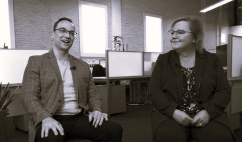
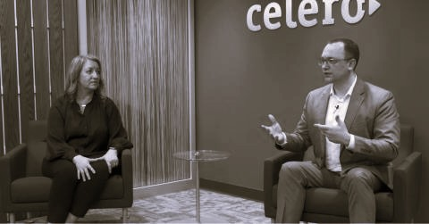
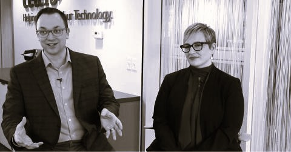
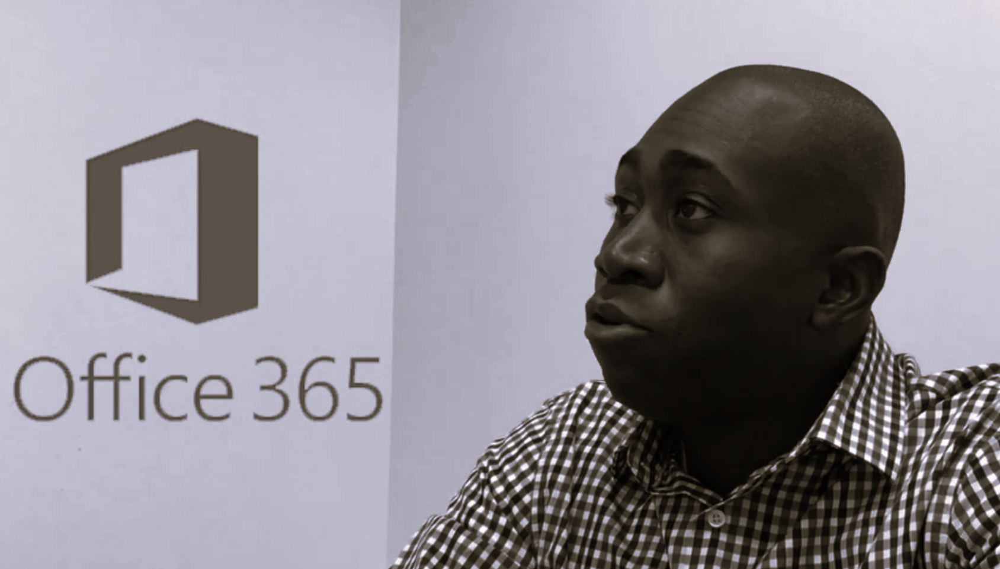

Your interests come first.
Advice begins with your business need, constraints and risks, not with a product or implementation to sell.
When the stakes are high and the information is incomplete, get an experienced, independent perspective before you commit. Pressure-test the advice, expose the trade-offs, and move forward with greater confidence.
Talk through the decisionYour employees may be encountering the decision for the first time. Your implementation vendor may offer valuable expertise, but also benefits when the scope grows. Alexander Consulting gives leadership a separate, client-side perspective focused on what is right for the organization.
Advice begins with your business need, constraints and risks, not with a product or implementation to sell.
Test whether the information is complete, the options are fairly represented and the proposed path is proportionate.
Turn complexity into clear choices, trade-offs, questions to resolve and practical next steps.
Review the case, assumptions, risks, costs and alternatives before leadership approves a major investment or direction.
Outcome: a clearer, defensible decision.
Examine recommendations, statements of work, estimates and solution claims from the client organization's point of view.
Outcome: better questions, leverage and scope control.
Get an objective view of delivery conditions, governance, risk and whether the current plan remains credible.
Outcome: practical findings and a route forward.
Bring the right leaders together to clarify the problem, compare choices and reach alignment around next steps.
Outcome: shared understanding and documented direction.
Alexander Consulting is designed for limited, defined advisory work. The goal is not to create dependence or expand a small question into a long engagement.
If the work genuinely becomes sustained project or program delivery, longer-term consulting or additional professional capacity, that can be considered separately through InScope Project Management & Consulting.
Get an independent review of the recommendation and identify the assumptions, trade-offs and questions that deserve more scrutiny.
Give the team access to experience without undermining internal ownership. Confirm what is strong, identify gaps and strengthen the decision.
Slow the decision down just enough to test the case, understand the risks and make the rationale more defensible.
Use a defined advisory engagement with a clear question, deliverable and ending.
“He quickly built trust among our IT team and Sr. Leadership. He is responsive, organized and provided a wide breadth of IT experience to us.”
“His ability to understand the business needs and help drive a solution was super helpful, particularly on our ITSM implementation.”
“Cory has a true talent for communicating and negotiating where the outcome is beneficial for all involved.”
The advice is independent, but it is informed by practical experience with significant technology, transformation and delivery initiatives.

▶
▶
▶
▶
Alexander Consulting & Project Management Ltd. helps leaders work through consequential business and technology decisions with greater clarity and confidence.
The practice is deliberately small and flexible. Engage for a conversation, review, assessment or working session, then leave with clearer choices and practical next steps.
Cory Alexander, MBA, PMP has managed large IT and business projects and programs in Canada and the U.S. for 20 years. That delivery background helps Cory recognize practical risks, challenge optimistic assumptions and translate complex information into decisions leaders can act on.
You do not need to know whether you need a project, assessment or workshop. Start by describing the decision, what you have been told and what is making you hesitate.
Get an independent perspective